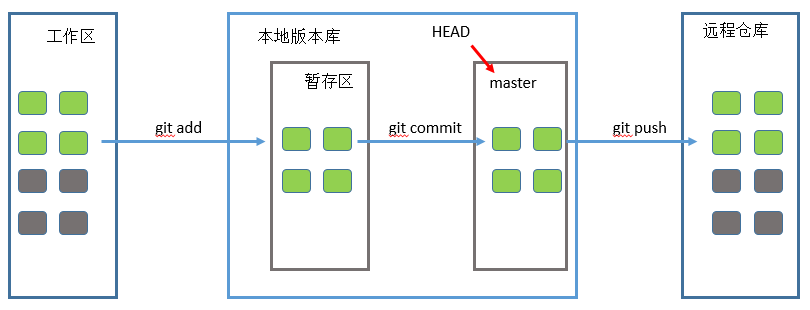
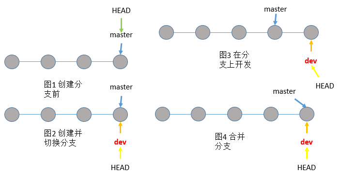

这里主要介绍一些基本的git用法，关于git的使用网上有很多教程。
创建本地git版本库
建立本地git仓库有两种方法，一种方法是init一个新仓库，另外一种方法从远程仓库clone。
git init方法
经过git init后就得到了一个新仓库。
git clone方法
使用git clone的前提是得有一个远程git库，可以是github或者其他服务器上的git仓库。下面是一个例子：
版本管理
git status:
当修改了某些文件或文件夹时，可以使用git status查看仓库当前的状态，下面是一个例子：
因为在上一步中clone下来的是一个空的git库，而且还没有任何操作，所以git status命令查看不到任何修改信息，下面向这个仓库中添加两个文件夹和一个文件后，然后再使用git status命令查看当前状态。
然后使用再做一点改变，示例如下：
git diff:
当想要查看具体的修改内容时，可以使用git diff，下面通过echo向READ文件中写了一个字符串，然后使用git diff，示例如下：
版本回退
如果提交了多个版本，可以使用git log查看每次提交都做了些什么修改，示例如下：
注意： commit后面的字符串583e1bf0164cec1f7be11d1135489613f0ee0df0是commit_id，在后面的版本回退和撤销操作中会用到。
在Git中，用HEAD表示当前版本，也就是最新的提交，上一个版本就是HEAD^，上上一个版本就是HEAD^^，当然往上100个版本写100个^比较容易数不过来，所以写成HEAD~100。
现在，我们要把当前版本append wwk回退到上一个版本kernel version，就可以使用git reset命令：
工作区和暂存区
在本地的仓库叫做工作区，也就是kernel-backup文件夹，在kernel-backup里面有一个影藏目录.git，这个.git就是版本库。

撤销git操作
如果修改了文件READ，但是还没有使用git add READ将文件添加到暂存区，这时如果想撤销对文件READ的修改，可以使用git checkout – READ命令。假如已经使用了git add将READ添加到了暂存区，这时要撤销修改的话，可以先使用git reset HEAD READ，将READ从暂存区重新放回工作区，然后再使用git checkout – READ来进行撤销修改。
多人协作
创建和切换分支
|
|
也可以将上面两天命令合并，git checkout -b dev命令表示创建并切换到分支dev，下面的图1表示只有master的情形，图2表示创建了dev分支并切换到dev分支，图3表示在分支dev上开发的情形，图4表示合并dev分支到master的情形。

合并分支
合并分支使用命令git merge，加入要将dev分支合并到当前master分支